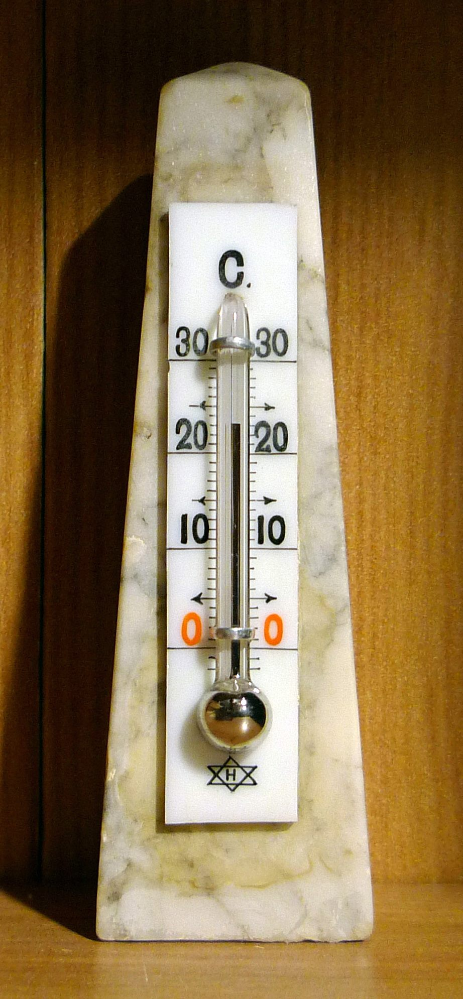

기후변화가 밀어 올린 폭염… 2026년 7월, 사상 가장 더웠다
기후변화가 밀어 올린 고온으로 2026년 7월이 관측 사상 가장 더운 달로 기록됐다. 세계 곳곳에서 폭염과 이상기후가 이어지면서 대응 필요성이 다시 부각되고 있다.
유선경 기자 · 2026.08.16
橋국제

자유시보 등에 따르면, 2026년 7월의 지구 평균 기온이 관측 이래 최고치를 경신한 것으로 나타났다. 장기적인 온난화 추세 위에 올해의 고온 현상이 겹친 결과로 분석된다.
광고 문의 · 300×250기록적 폭염은 건강과 노동, 농업과 에너지 수요에 광범위한 영향을 준다. 온열질환 위험이 커지고 냉방 수요가 급증하며, 작황과 수자원 관리에도 부담이 가중된다.
과학계는 이런 극단적 고온이 특정 해의 이변이 아니라, 온난화 추세 속에서 점점 잦아지는 흐름의 일부라고 본다. 평년보다 더운 여름이 ‘새로운 정상’이 되고 있다는 진단이다.
동아시아 역시 폭염과 열대야, 집중호우 등 기후 리스크에 노출돼 있다. 도시의 열섬과 취약계층 보호, 에너지 수급 관리가 공통 과제로 떠오른다.
華橋時報는 기후 문제를 진영 논쟁이 아니라, 재한 화인 사회를 포함한 모든 주민의 건강·생활과 직결된 보편적 과제로 다룬다.
출처·참고 (사실 확인용 — 본문은 직접 재작성)
· 自由時報 (2026.08.11)
· 自由時報 (2026.08.11)